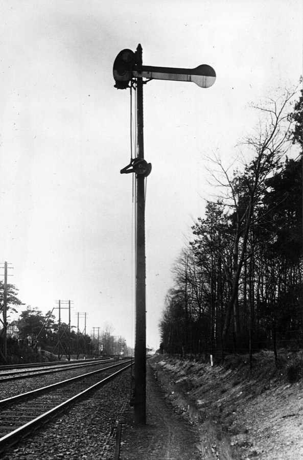
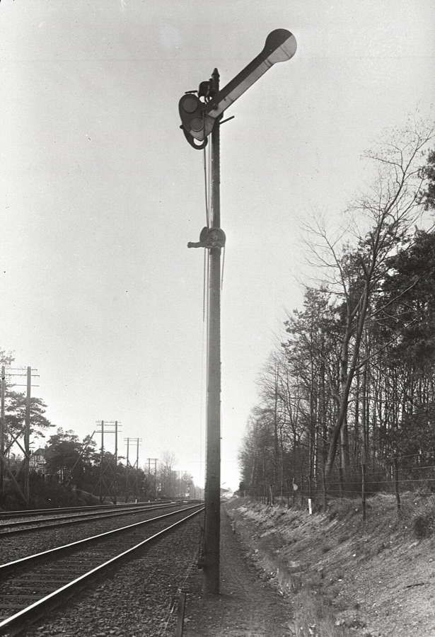

Java// k numbers the portions; the bound of portion k is 250000 + 83333 * (k % 3)
for (int k = 1; k <= 8; k++) {
// a computation: how many primes are there below the bound of portion k?
String portion = produceNextPortion(k);
// a slow device: prints the answer as one line of the page
processPortionTaken(portion);
}
E. W. Dijkstra, Cooperating sequential processes, EWD 123, 1965: section 4.3, page 39 of the manuscript. Beside it, the same lines transcribed.
"begin integer number of queuing portions, number of empty positions,
buffer manipulation;
number of queuing portions:= 0;
number of empty positions:= N;
buffer manipulation:= 1;
parbegin
producer: begin
again 1: produce next portion;
P(number of empty positions);
P(buffer manipulation);
add portion to buffer;
V(buffer manipulation);
V(number of queuing portions); goto again 1 end;
consumer: begin
again 2: P(number of queuing portions);
P(buffer manipulation);
take portion from buffer;
V(buffer manipulation);
V(number of empty positions);
process portion taken; goto again 2 end
parend
end" .
EWD 123, 1965, section 4.3. His P is acquire, his V is release.
Two differences from Dijkstra’s program:
Each loop is an ordinary sequential program.
Four of its lines are the actions we know from the previous slide: produce a portion, put it in the queue, take one out, process it.
These lines call acquire.
Intuitively, acquire waits until something is available, then claims it:
These lines call release.
Intuitively, release makes something available, and a process waiting for it can go on:
Each of those three objects is a semaphore*: a counter, with two operations:
acquire waits until the counter is above zero, then takes one off;release adds one.We come back to them shortly, for what each one allows, but also helps to prevent.
*how a semaphore is built, and what a language offers in its place will be covered in Session 7.
What will be true in every run?


Before programming, a semaphore was a railway signal: an arm on a post, guarding a stretch of track.
P: a train passes the signal only when it shows safe; behind it, the signal is set to stop.
V: the train has left the stretch; the signal is set to safe again.
One train at a time on the stretch.
One signal near Bilthoven, 1938 (Het Utrechts Archief, public domain). The railway is Dijkstra’s own picture, for a semaphore that is 0 or 1: EWD 51.
Java// producer
for (int k = 1; k <= 8; k++) {
String portion = produceNextPortion(k);
numberOfEmptyPositions.acquire(); // wait for room
bufferManipulation.acquire(); // one at a time on the queue
buffer.addLast(portion);
bufferManipulation.release();
numberOfQueuingPortions.release();
}
// consumer
for (int k = 1; k <= 8; k++) {
numberOfQueuingPortions.acquire(); // wait for a portion
bufferManipulation.acquire(); // one at a time on the queue
String portion = buffer.removeFirst();
bufferManipulation.release();
numberOfEmptyPositions.release();
processPortionTaken(portion);
}
What the runs show
Coordination: when a process may act depends on what the others have done or are doing.
not before
P waits until Q has acted
not at the same time
P and Q are never both inside
Communication: data passes from one process to another.
through memory that both can reach
P writes, Q reads
by a message
P sends, Q receives
Java// producer
for (int k = 1; k <= 8; k++) {
String portion = produceNextPortion(k);
numberOfEmptyPositions.acquire();
bufferManipulation.acquire();
buffer.addLast(portion);
bufferManipulation.release();
numberOfQueuingPortions.release();
}
// consumer
for (int k = 1; k <= 8; k++) {
numberOfQueuingPortions.acquire();
bufferManipulation.acquire();
String portion = buffer.removeFirst();
bufferManipulation.release();
numberOfEmptyPositions.release();
processPortionTaken(portion);
}
numberOfQueuingPortions counts the portions in the queue: acquire waits while it is 0, the producer's release adds one.numberOfEmptyPositions counts the empty places: acquire waits while it is 0, the consumer's release adds one.bufferManipulation is taken before the queue is touched and given back after.addLast in the producer, removeFirst in the consumer.“Software is hard.”
Donald Knuth
Writing a correct sequential program is already a challenge. For a concurrent or distributed program it is an order of magnitude harder: one input has many executions, and a part can fail while the others go on.
In general, the correctness of a program splits into properties of two kinds.
Nothing bad ever happens.
A violation happens at one definite moment.
Something good eventually happens.
No finite beginning of an execution violates it.
| property | what it says | an example | |
|---|---|---|---|
| mutual exclusion | two processes are never in the same critical section at the same time | the bounded buffer: one at a time on the queue | safety |
| linearizability | the calls answer as if made one at a time, in an order that keeps a call that returned before one that was made later | a bank account that many clients use at once | safety |
| deadlock freedom | no state is ever reached in which each process waits for something that only another can give | two transfers, each holding one lock and waiting for the other’s | safety |
| starvation freedom | every process that asks is served in the end | every request to a server gets an answer | liveness |
| eventual consistency | if the requests stop, the copies agree in the end | two copies of an account on two machines | liveness |
For every property, who makes it hold: the language, a library, or the programmer?
| the language (compiler, runtime) | a library | the programmer (keywords, discipline) | |
|---|---|---|---|
| mutual exclusion safety | Rust: no way to the data in a Mutex<T> without its lock. Erlang: nothing is shared. | locks and semaphores: java.util.concurrent | synchronized, sync.Mutex: every access must lock; nothing checks |
| starvation freedom liveness | Go, Erlang interrupt a long computation; JavaScript does not | fair locks: new ReentrantLock(true) | no long computation on the loop; time limits |
This is not a course on concurrency or on distributed systems: it meets their notions through the programming language.
| mutual exclusion | which construct holds the lock, and who checks that it is taken? |
| failures | in what form does a failure reach the program? |
| 6 | At which points of a function's text can control pass to another process, and what represents the suspended computation? |
| 7 | When two processes can reach the same data, which constructs express mutual exclusion and condition synchronization, and do they compose? |
| 8 | If processes share no data, what does passing a value from one to the other mean: is it shared, copied, or moved? |
| 9 | When a fault occurs, in what form does it reach the program, which constructs report it and recover from it, and what remains for the programmer? |
deposit(n) answers ok
withdraw(n) answers ok or refused
as if one at a time, in some order
Ten thousand clients: a thread for each, or one loop for all?
Ten thousand clients at once, most of them idle: the C10K problem (Kegel, 1999).
Two processes need the same data: share it, or send copies?
Two copies cannot reach each other: what does a copy answer to a client? Refuse to answer, or let them differ?
Every run prints portions 1 to 8 in order, each after it is produced.
Java// one at a time on the queue: one thread runs all of this
static final ScheduledExecutorService loop =
Executors.newSingleThreadScheduledExecutor();
// producer
static CompletableFuture<Void> produce(int k) {
if (k > 8) return done();
String portion = produceNextPortion(k);
return queue.put(portion) // wait for room
.thenComposeAsync(v -> produce(k + 1), loop);
}
// consumer
static CompletableFuture<Void> consume(int k) {
if (k > 8) return done();
return queue.take() // wait for a portion
.thenComposeAsync(p -> processPortionTaken(p), loop)
.thenComposeAsync(v -> consume(k + 1), loop);
}
The diagram of slide 3 is a program: two async functions sharing one array as the queue.
until waits and signal wakes, in the parts of acquire and release.
The device’s time is random: every run differs.
One thread: the turn passes only at an await, so one at a time on the queue needs no semaphore. Session 6.
JavaScript// producer
for (let k = 1; k <= 8; k++) {
await sleep(PRODUCE[(k - 1) % 3]); // produce next portion
const c = chip(k);
while (queue.length === 2) // wait for room
await until('room', producer);
queue.push(c); place(); // add portion to buffer
signal('portion');
}
// consumer
for (let k = 1; k <= 8; k++) {
while (queue.length === 0) // wait for a portion
await until('portion', consumer);
const c = queue.shift(); place(); // take portion from buffer
signal('room');
moveTo(c, AT_CONSUMER);
await sleep(0.8 + Math.random() * 0.9); // the device
print(c, k); // process portion taken
}
Liveness: the request gets its answer in the end; the copies agree in the end.
Safety: the three requirements at the balance. Each says never.
| the language (compiler, runtime) | a library | the programmer (keywords, discipline) | |
|---|---|---|---|
| mutual exclusion | Rust: no way to the data in a Mutex<T> without its lock. Erlang: nothing is shared. | locks and semaphores: java.util.concurrent | synchronized, sync.Mutex: every access must lock; nothing checks |
| linearizability | Erlang: a process handles one message at a time | AtomicInteger: each operation, alone | two such operations in a row are not one: check, then act |
| deadlock freedom | Prevented by none of Java, Rust, Go, Erlang. Go’s runtime detects a total deadlock. | tryLock with a time limit | one order in which all code takes its locks |
| starvation freedom | Go, Erlang interrupt a long computation; JavaScript does not | fair locks: new ReentrantLock(true) | no long computation on the loop; time limits |
| eventual consistency | Provided by no general-purpose language. | mergeable data types, such as a set with union | which merge is right; when to send again |
await.After this session we can explain:
Languages: JavaScript; Python beside it.
After this session we can explain:
map of a function without effects gives the same result in every execution.Languages: Java; Rust and OCaml beside it.
After this session we can explain:
Languages: Go; Erlang.
Goportions := make(chan string, 2)
go func() {
for k := 1; k <= 8; k++ {
portions <- produce(k)
}
close(portions)
}()
for p := range portions {
process(p)
}Erlangloop(Balance) ->
receive
{deposit, N, From} ->
From ! ok, loop(Balance + N);
{withdraw, N, From} when N =< Balance ->
From ! ok, loop(Balance - N);
{withdraw, _, From} ->
From ! refused, loop(Balance)
end.After this session we can explain:
Languages: Erlang; OCaml.